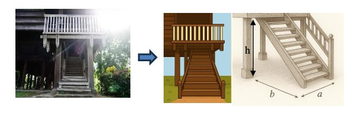

1. Pendahuluan
Rumah Adat Mandar adalah bangunan tradisional yang berasal dari wilayah Sulawesi Barat. Struktur rumah ini dirancang dengan memperhatikan prinsip-prinsip geometris dan keseimbangan matematis, terutama pada bentuk panggung, proporsi tiang, dan kemiringan atap. Rumah Adat Mandar umumnya berbentuk persegi panjang dengan kolong di bagian bawah sebagai ruang sirkulasi udara dan penyimpanan. Atapnya berbentuk pelana dengan sudut kemiringan tertentu yang disesuaikan untuk mengalirkan air hujan secara efisien, sedangkan tiang-tiang kayunya tersusun simetris untuk menopang beban bangunan secara seimbang.

2. Aspek Geometri dalam Desain Mandar
Aspek pertama yang dapat kita lihat adalah penggunaan geometri dalam membangun Rumah Adat Mandar (Boyang). Misalnya, atap pelana (Pata’na Boyang) yang menjadi ciri khas bangunan ini memiliki bentuk menyerupai prisma segitiga, yang secara matematis dapat dijelaskan melalui konsep geometri bidang dan ruang, khususnya dalam perhitungan sudut kemiringan, luas permukaan, dan volume. Sudut atap ditentukan berdasarkan perbandingan antara tinggi bubungan dan setengah lebar rumah, menunjukkan penerapan prinsip trigonometri dalam desain arsitekturnya.
2.A Bentuk Atap atau Pata’na Boyang
Atap rumah adat Mandar dikenal dengan nama Pata’na Boyang, yaitu atap berbentuk pelana yang menyerupai prisma segitiga dan menjadi ciri khas arsitektur tradisional masyarakat Mandar di Sulawesi Barat. Bentuk atap ini tidak hanya berfungsi melindungi rumah dari hujan dan panas, tetapi juga menjaga sirkulasi udara agar rumah tetap sejuk dan kering. Secara matematis, struktur Pata’na Boyang menerapkan konsep geometri ruang.

2.B Contoh Penghitungan Volume Atap Prisma Segitiga
Untuk menghitung volume atap Pata’na Boyang pada Rumah Adat Mandar yang berbentuk prisma segitiga, kita dapat menggunakan rumus volume prisma:
$$V = \frac{1}{2} \times a \times t \times T$$
Dimana:
- V = Volume atap
- a = Panjang alas segitiga
- t = Tinggi segitiga (jarak dari puncak ke dasar)
- T = Panjang atap rumah
Misalnya, jika alas segitiga atap adalah 8 meter, tinggi segitiga atap 3 meter, dan panjang atap rumah 10 meter, maka:
$$V = \frac{1}{2} \times 8 \times 3 \times 10 = 120\ \text{meter kubik}$$
Dengan demikian, volume atap yang membentuk prisma segitiga adalah 120 meter kubik. Ini adalah contoh aplikasi geometri untuk menghitung kapasitas ruang di bagian atap Mandar.
2.C Tangga Rumah
Tangga pada Rumah Adat Mandar berfungsi sebagai penghubung antara tanah dan lantai rumah panggung serta mencerminkan penerapan Teorema Pythagoras, karena membentuk segitiga siku-siku antara tinggi rumah (a), jarak kaki tangga dari dasar rumah (b), dan panjang tangga (c). Secara matematis, hal ini menunjukkan keseimbangan proporsi dan stabilitas struktur. Jumlah anak tangganya yang berbilangan ganjil seperti 5, 7, atau 9 membentuk barisan aritmetika, menggambarkan keteraturan sekaligus nilai filosofis tentang keseimbangan dan keharmonisan hidup.

2.D Contoh Penghitungan Panjang Tangga dengan Teorema Pythagoras
Rumus:
$$c ^ 2 = a ^ 2 + b ^ 2$$
Dimana:
- c = Panjang tangga (sisi miring)
- a = tinggi rumah
- b = jarak kaki tangga dari dasar rumah
Misalnya, tinggi rumah 3 meter dan jarak kaki tangga 4 meter, maka:
$$c ^ 2 = 3 ^ 2 + 4 ^ 2$$
$$c ^ 2 = 9 + 16$$
$$c ^ 2 = 25$$
$$c = √25$$
$$c = 5$$
Jadi, panjang tangga Rumah Adat Mandar adalah 5 meter, menunjukkan penerapan konsep Teorema Pythagoras dalam desain tradisionalnya.
2.E Tiang Penyangga (Alliriang)
Dalam arsitektur rumah adat Mandar atau Boyang, tiang penyangga (alliriang) merupakan elemen struktural utama yang menopang keseluruhan bangunan. Rumah Boyang dibangun dalam bentuk rumah panggung, sehingga keberadaan tiang menjadi pusat kekuatan dan keseimbangan bangunan. Berdasarkan hasil penelitian Nurmiati Zamad & Alfiah (2017) dalam artikel “Identitas Arsitektur Mandar pada Bangunan Tradisional di Kabupaten Majene”, struktur tiang rumah Mandar tersusun secara teratur dan simetris, membentuk pola grid sejajar yang tidak hanya memperkuat konstruksi fisik, tetapi juga mencerminkan nilai keteraturan, keseimbangan, dan kebersamaan dalam budaya masyarakat Mandar. Secara matematis, susunan tiang pada rumah Boyang mencerminkan penerapan konsep geometri bidang dan ruang, khususnya pada garis sejajar, jarak antar titik, serta bentuk balok tiga dimensi.

2.F Contoh Penghitungan Volume dan Jarak Antar Tiang (Grid Simetris)
Misalkan rumah adat mandar memiliki ukuran panjang 10 meter dan lebar 6 meter. Rumah ini ditopang oleh tiang kayu balok berbentuk dengan ukuran 0.3 meter x 0.3 meter x 3 meter (panjang x lebar x tinggi). Tiang-tiang tersebut disusun dalam 4 baris sepanjang rumah dan 3 kolom di lebar rumah, membentuk pola grid teratur.
Pertanyaannya: 1. Hitung total volume kayu yang digunakan untuk tiang. 2. Tentukan jarak antar tiang pada panjang dan lebar rumah agar gridnya merata. 1. Perhitungan Volume TiangRumus:
$$V (tiang) = \times 0.3 \times 0.3 \times 3 = 0.27\ \text{meter kubik}$$
Jumlah tiang: \times 4 \times 3 = 12$$
$$jarak antar tiang = \frac{10}{6-1} = 2\ \text{meter}$$
$$V (total) = \times 0.27 \times 12 = 3.24\ \text{meter kubik}$$
Jadi total kayu tiang yang digunakan 3.24 meter kubik 2. Perhitungan Grid Tiang- Panjang rumah = 10 meter, jumlah baris = 4
- $$Jarak antar baris = \frac{10}{4-1} = 3.33\ \text{meter}$$
- Lebar rumah = 6 meter, jumlah kolom = 3
- Jarak antar kolom = \frac{6}{3-1} = 2\ \text{meter}$$ Jadi tiang tersusun 4 baris \times 3 kolom, dengan jarak antar baris 3.33 meter dan jarak antar kolom 3 meter
3. Panorama 360° Tambahan
Panorama kedua berikut menyorot perspektif serambi yang memanjang. Perhatikan bagaimana jalur sirkulasi, kolom penyangga, dan bukaan ventilasi saling terhubung sehingga cahaya dan udara dapat mengalir dari halaman ke ruang utama.
4. Simetri dan Proporsi dalam Mandar
Rumah Adat Mandar juga mengandung prinsip simetri dalam desainnya. Simetri ini tidak hanya terlihat dalam bentuk keseluruhan bangunan, tetapi juga dalam penataan kolom dan tiang yang mendukung struktur utama rumah. Misalnya, jumlah kolom yang digunakan sering kali mengacu pada angka genap atau kelipatan, memberikan kesan seimbang.
4.A Contoh Simetri dalam Struktur Kolom
Untuk mendesain jarak antar kolom agar seimbang, kita dapat menggunakan konsep geometri segitiga atau trapesium. Dengan menggunakan rumus tangent dan sudut, kita bisa menghitung kemiringan tiang atau kolom agar tetap simetris di kedua sisi.
$$\tan(\theta) = \frac{\text{tinggi tiang}}{\text{jarak antar kolom}}$$
Misalnya, jika tinggi tiang adalah 4 meter dan jarak antar kolom adalah 3 meter, maka sudut kemiringan tiang adalah:
$$\tan(\theta) = \frac{4}{3} \approx 1.33$$
Dengan demikian, sudut kemiringan tiang dapat dihitung menggunakan inverse tangent (atan), yang dapat diimplementasikan dalam kalkulator atau software matematika.
5. Kesimpulan
Desain Rumah Adat Mandar tidak hanya mencerminkan nilai-nilai budaya dan sejarah, tetapi juga prinsip-prinsip matematika yang mendasari struktur bangunannya. Pemahaman tentang geometri, proporsi, dan simetri dapat membantu kita menghargai keindahan arsitektur tradisional ini secara lebih mendalam, serta memberikan wawasan tentang bagaimana matematika diterapkan dalam kehidupan sehari-hari.